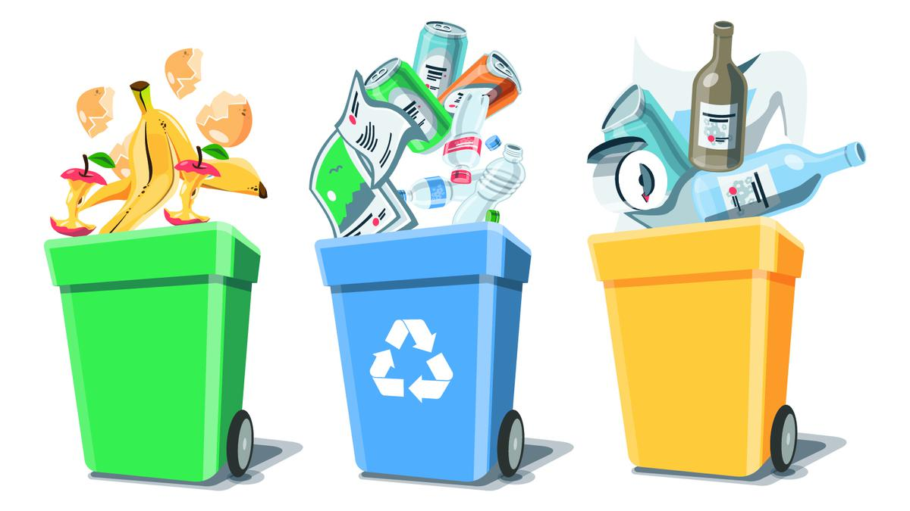
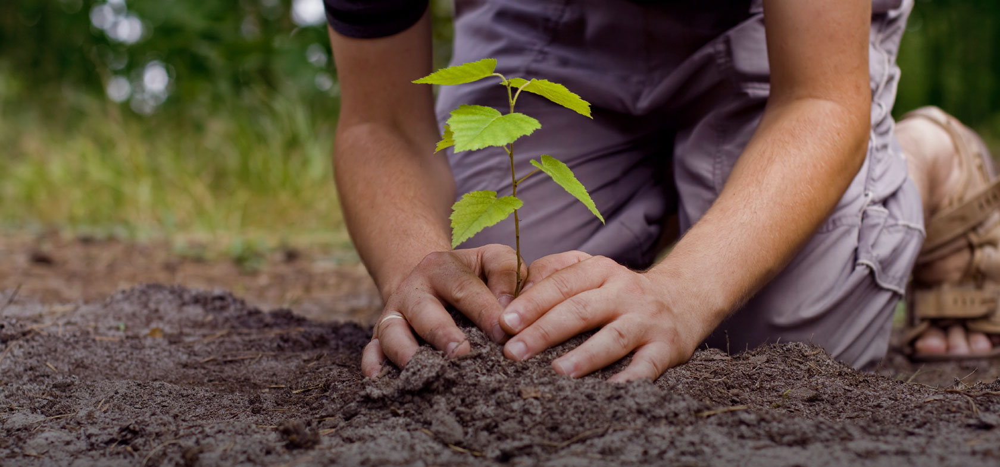
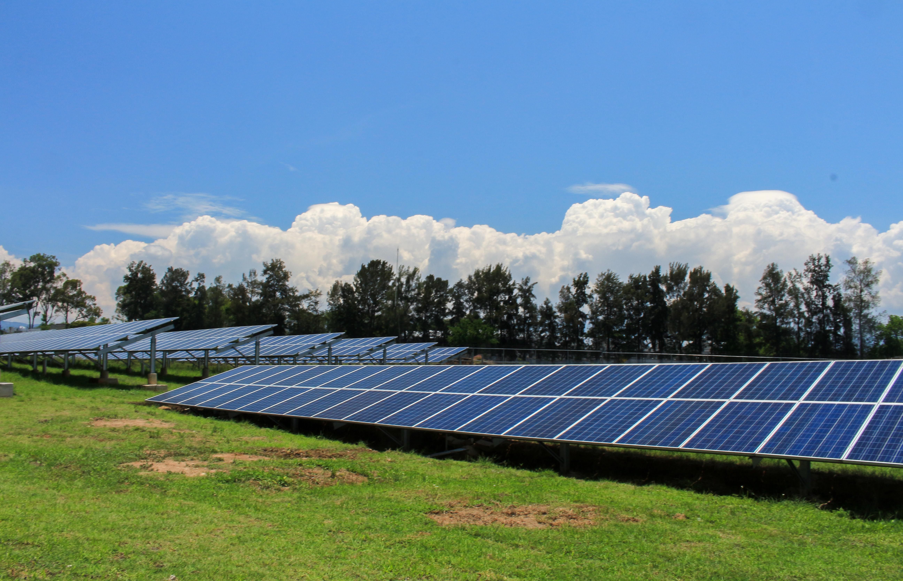
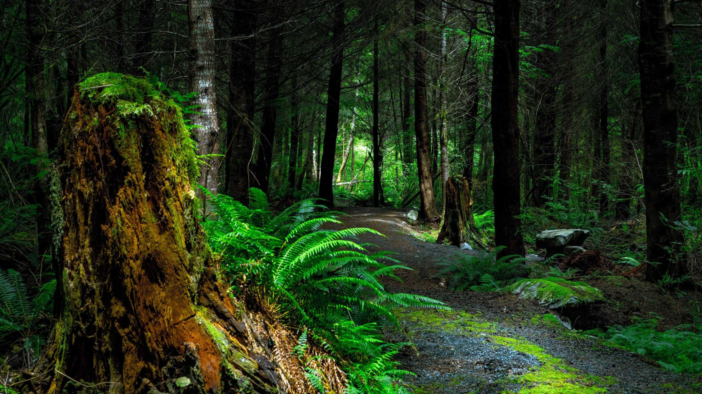
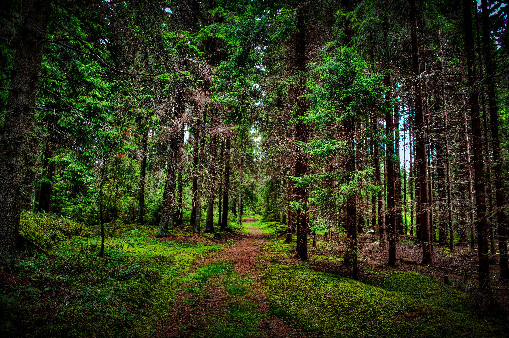

Galería de Imágenes Ecoamigables




Concientización Ambiental para un Futuro Sostenible
El medio ambiente es la base de toda la vida en la Tierra. Cada ecosistema, desde los océanos hasta los bosques, desempeña un papel crucial en la estabilidad y el equilibrio del planeta. M antener un planeta sano no solo es fundamental para la vida silvestre y la biodiversidad, sino también para la salud y el bienestar humano. La calidad del aire que respiramos, el agua que bebemos, los alimentos que consumimos y los recursos naturales que utilizamos dependen de la conservación de un medio ambiente saludable.
En las últimas décadas, la actividad humana ha alterado profundamente los sistemas naturales. La contaminación del aire y del agua, generada por industrias y el uso excesivo de combustibles fósiles, ha contribuido al calentamiento global y ha incrementado los niveles de gases de efecto invernadero. Estas emisiones provocan cambios drásticos en el clima, causando fenómenos como huracanes, inundaciones, sequías y olas de calor que afectan directamente a las comunidades más vulnerables.
También puedes sumarte a iniciativas locales de limpieza de playas y bosques, o simplemente compartir información sobre la importancia de cuidar el medio ambiente en tus redes sociales.
Responde el siguiente test para evaluar tu conocimiento sobre protección ambiental.
A continuación, puedes ver algunos videos que explican la importancia de cuidar el medio ambiente:
Otro factor crítico es la contaminación por plásticos. Los plásticos de un solo uso han invadido los océanos y ríos, causando la muerte de miles de especies marinas cada año. Animales como tortugas, peces y aves confunden los plásticos con alimento, lo que les provoca daños fatales. De hecho, estudios recientes han demostrado que microplásticos se encuentran ahora incluso en el agua potable y en la cadena alimentaria humana, lo que plantea riesgos significativos para nuestra salud.